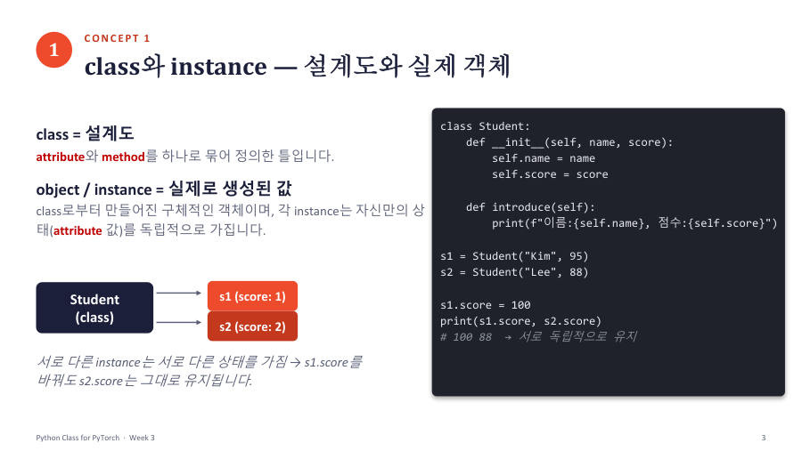

← 보드클래스와 상속 · 1/12
class와 객체(instance) — 설계도와 만들어진 물건 ★★
class(클래스)는 데이터와 동작을 하나로 묶어 정의한 설계도예요. 이 설계도로 실제로 만들어진 값을 object(객체) 또는 instance(인스턴스)라고 해요. 교수님도 "클래스는 설계도, 실제로 만들어진 값이 객체"라고 설명했어요.
비유 — 붕어빵 틀과 붕어빵
붕어빵 틀이 설계도(class)이고, 틀로 찍어 낸 붕어빵 하나하나가 객체(instance)예요. 같은 틀에서 나와도 붕어빵마다 속 재료(팥, 슈크림)를 따로 넣을 수 있어요. 한 붕어빵의 속을 바꿔도 다른 붕어빵은 그대로예요.

class Student:
def __init__(self, name, score):
self.name = name
self.score = score
def introduce(self):
print(f"이름: {self.name}, 점수: {self.score}")
s1 = Student("Kim", 95)
s2 = Student("Lee", 88)
print(s1 is s2)
s1.introduce()
s2.introduce()
False
이름: Kim, 점수: 95
이름: Lee, 점수: 88
| 코드 줄 | 무슨 뜻 |
|---|---|
class Student: | "Student라는 설계도를 정의한다". 이 줄 아래 들여쓴 부분이 설계도 내용이에요. 정의만으로는 아무것도 만들어지지 않아요 |
s1 = Student("Kim", 95) | 설계도로 객체를 하나 만들어 s1이라는 이름표를 붙여요 |
s2 = Student("Lee", 88) | 같은 설계도에서 또 하나 만들어요. s1과 s2는 서로 다른 객체예요 |
s1 is s2 | "같은 객체인가?" → 다른 객체라 False |
s1.introduce() | s1에게 introduce 동작을 시켜요. 점은 "~의"이고 괄호가 있으니 동작이에요(0장) |
클래스 안에서 쓰는 용어를 표로 정리할게요.
| 용어 | 뜻 | 이 예에서 |
|---|---|---|
| attribute (속성) | 객체가 기억하는 데이터(상태) | self.name, self.score |
| method (메서드) | 객체가 하는 동작. class 안에 정의한 함수 | introduce() |
| instance | 설계도로 만든 객체 | s1, s2 |
시험엔 이렇게 써요 — 이렇게 고르세요
class는 attribute와 method를 하나로 묶어 정의한 설계도이고, instance는 class로부터 만들어진 실제 객체이며 각 instance는 자신만의 상태(attribute 값)를 독립적으로 가진다. 객체가 여러 개이면 "누구의 값인지" 이름표(s1, s2)를 구분해서 따라가세요.
잠깐 확인 — Student("Kim", 95)와 Student("Lee", 88)을 만들었습니다. 이 둘은 같은 객체인가요?
아니에요. 같은 class(설계도)에서 만들었을 뿐 서로 다른 instance(객체)예요.
덮고 10초 — 말해 보기
화면을 가리고 "class와 객체(instance) — 설계도와 만들어진 물건 ★★"을(를) 친구에게 설명하듯 한 문장으로 말해 보세요. 막히면 위의 빨간 칸만 다시 보고 넘어가요.
다음 카드 → __init__과 self — 객체가 만들어질 때 일어나는 일 ★★★
자료: 3~4주차 · Week03_Class_for_PyTorch(pdf, ipynb 업데이트본) · 빅데이터03(3주차)·빅데이터04(4주차) 녹취